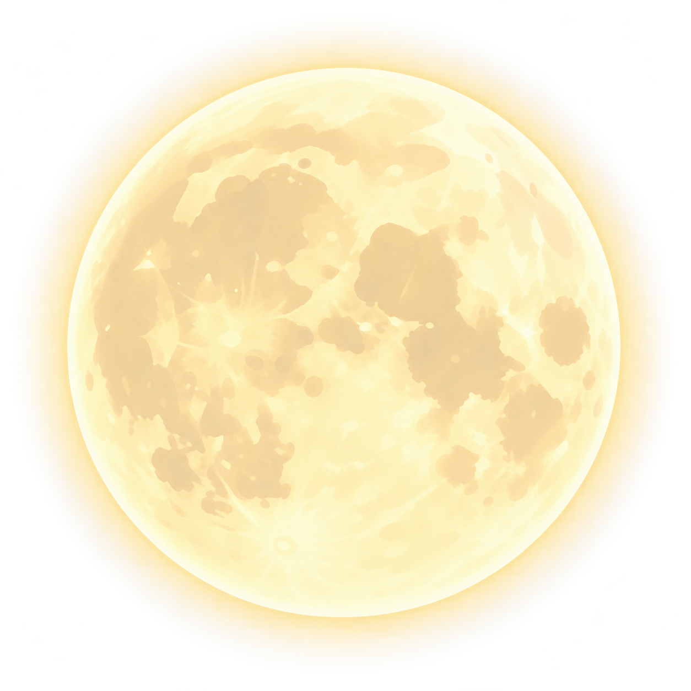
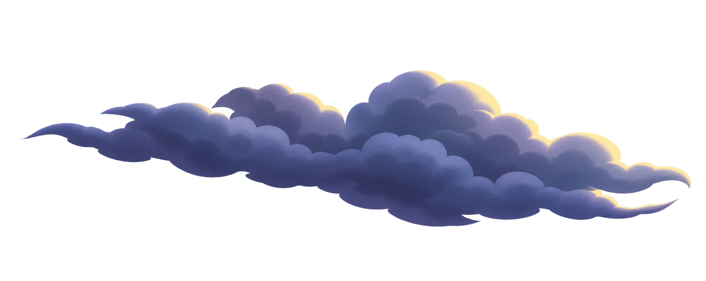
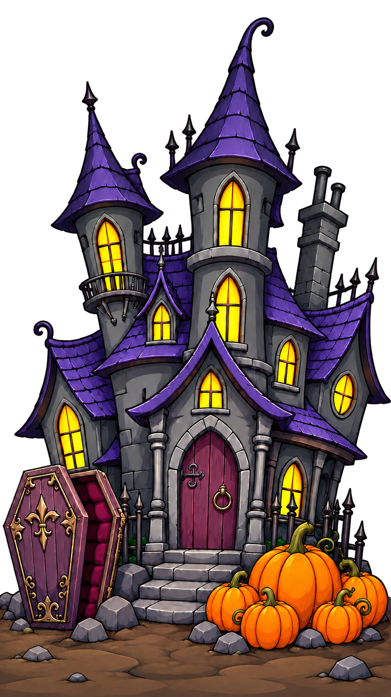
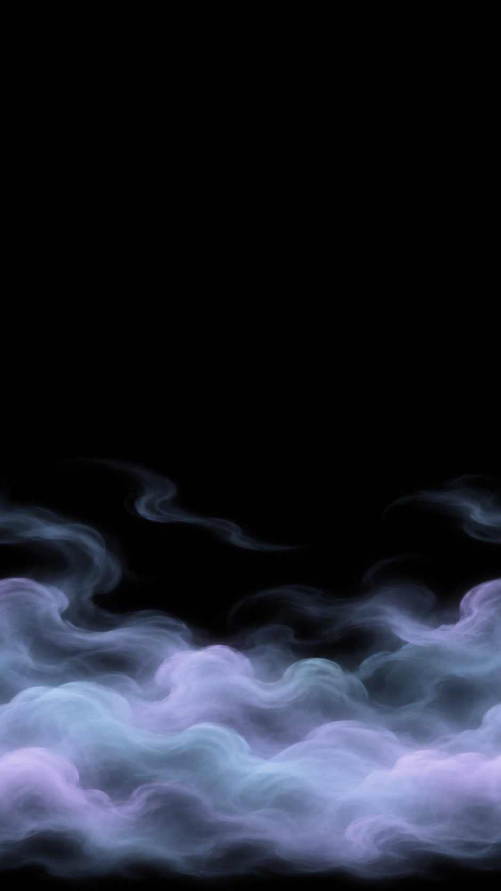

A cartoon haunted house at night with a vampire coffin and a pumpkin patch under a full moon. A caped character wanders in front. Keyboard: use the arrow keys to move a pointer, hold Space to pick the character up, and release Space to drop it.




The Jack-o'-Land
Something spooky is waiting in the dark. Look closely.
Keyboard: arrow keys move a pointer, hold Space to pick things up.
Reduced motion is on, so the scene starts still. Use the play button to turn motion on.